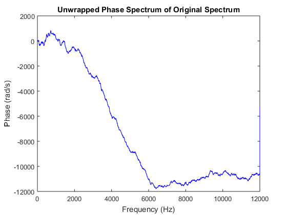
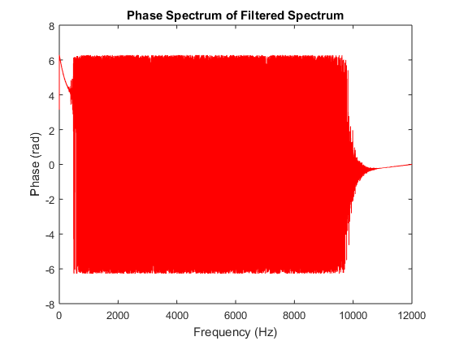

function [] = HW13_schaffjr()
close all; clc;
[x,Fs] = audioread('test2.wav');
fprintf('Part 2 Complete\n');
sound(x,Fs);
pause(10);
fprintf('Part 3 Complete\n');
L = length(x);
X = fft(x);
mag = abs(X);
magdB = 20*log10(mag);
magnitudeSpectrum = magdB(1:L/2+1);
magnitudeSpectrum(2:end-1) = 2*magnitudeSpectrum(2:end-1);
pha1 = (angle(X));
pha1un = unwrap(pha1);
phaseSpectrum = pha1(1:L/2+1);
phaseSpectrum(2:end-1) = 2*phaseSpectrum(2:end-1);
phaseSpectrumUn = pha1un(1:L/2+1);
phaseSpectrumUn(2:end-1) = 2*phaseSpectrumUn(2:end-1);
fprintf('Part 4 Complete\n');
freqVect = Fs*(0:(L/2))/L;
figure()
plot(freqVect,magnitudeSpectrum,'b');
xlabel('Frequency (Hz)');
ylabel('Magnitude (dB)');
title('Magnitude Spectrum of Original Spectrum');
figure()
plot(freqVect,phaseSpectrum,'b');
xlabel('Frequency (Hz)');
ylabel('Phase (rad)');
title('Phase Spectrum of Original Spectrum');
figure()
plot(freqVect,phaseSpectrumUn,'b');
xlabel('Frequency (Hz)');
ylabel('Phase (rad/s)');
title('Unwrapped Phase Spectrum of Original Spectrum');
W = 2.*[1500 5800]./Fs;
[B1,A1] = butter(7,W, 'bandpass');
fprintf('Part 5 Complete\n');
figure()
freqz(B1,A1,1024,Fs);
title('Frequency Spectrum of Filter');
fprintf('Part 6 Complete\n');
y = filter(B1, A1, x);
fprintf('Part 7 Complete\n');
sound(y,Fs);
pause(10);
fprintf('Part 8 Complete\n');
L = length(x);
Y = fft(y);
magY = abs(Y);
magYdB = 20*log10(magY);
magnitudeSpectrumY = magYdB(1:L/2+1);
magnitudeSpectrumY(2:end-1) = 2*magnitudeSpectrumY(2:end-1);
phaY = (angle(Y));
phaYUn = unwrap(phaY);
phaseSpectrumY = phaY(1:L/2+1);
phaseSpectrumY(2:end-1) = 2*phaseSpectrumY(2:end-1);
phaseSpectrumYUn = phaYUn(1:L/2+1);
phaseSpectrumYUn(2:end-1) = 2*phaseSpectrumYUn(2:end-1);
figure()
plot(freqVect,magnitudeSpectrumY,'r');
xlabel('Frequency (Hz)');
ylabel('Magnitude (dB)');
title('Magnitude Spectrum of Original Spectrum');
figure()
plot(freqVect,phaseSpectrumY,'r');
xlabel('Frequency (Hz)');
ylabel('Phase (rad)');
title('Phase Spectrum of Filtered Spectrum');
fprintf('Part 9 Complete\n');
figure()
plot(freqVect,phaseSpectrumYUn,'r');
xlabel('Frequency (Hz)');
ylabel('Phase (rad)');
title('Unwrapped Phase Spectrum of Filtered Spectrum');
fprintf('Part 9 Complete\n');
audiowrite('FilteredOutput.wav', y, Fs);
fprintf('Part 10 Complete\n');
end
Part 2 Complete
Part 3 Complete
Part 4 Complete
Part 5 Complete
Part 6 Complete
Part 7 Complete
Part 8 Complete
Part 9 Complete
Part 9 Complete
Part 10 Complete
 